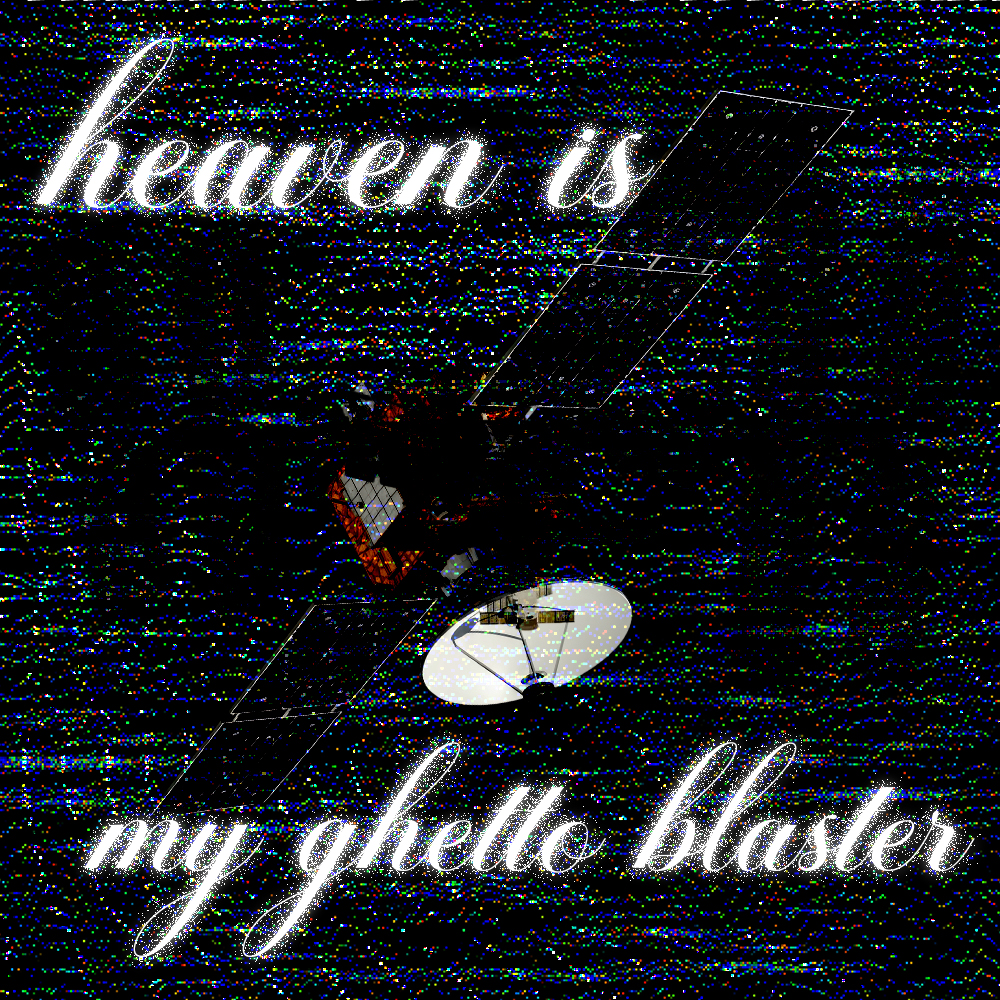

Virtual Collage
Photoshop
2025
One of my favorite ways of creating is exploring different effects that can be created in Photoshop by combining preexistent photos to create something new, something mine.
I don't draw well, so when I have an image in my head I want to put out, the alternative I’ve chosen is to use what is available and to change it, distort it, deconstruct it and make it my own. Due to this limitation, I need to get creative to get what I want, since the photos I find often don’t correspond to my vision. I really enjoy the challenge it provides, and the whole process is very inspiring, as it involves improvisation, experimenting, learning new techniques, and serendipity.
Programming with Processing/p5.js or TouchDesigner to create visuals is also very interesting to me for the same reasons.
pluh

I enjoy the aesthetic of the divine appearing in strange places, disturbing the fabric of reality.

Inspired by the comforting feelings associated by the song whose lyrics are written and wild horses in the American Midwest.

Flowers cut by the dozen